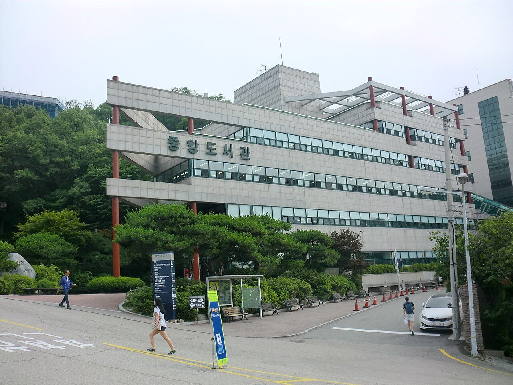

상명대학교는 1937년에 문을 연 사립대학으로, 서울 종로구에 서울캠퍼스가, 충청남도 천안시에 천안캠퍼스가 있습니다. 두 캠퍼스가 각각 신입생을 따로 뽑기 때문에, 이 대학을 알아보실 때는 “상명대 수시”가 아니라 “상명대 어느 캠퍼스 수시”로 좁혀서 보셔야 합니다. 같은 이름의 전형인데 조건이 다른 경우가 있기 때문입니다.
2027학년도 수시 원서접수는 2026년 9월 7일 오전 10시부터 11일 오후 6시까지로 이미 마감됐습니다. 그럼에도 정리해 두는 이유는, 이 대학의 전형 구조가 고1·고2 자녀를 두신 가정에 “수능을 어디까지 준비할 것인가”를 캠퍼스 단위로 되묻기 때문입니다.
먼저 보도된 수치입니다.
- 수시 전체 1,958명 — 서울캠퍼스 947명, 천안캠퍼스 1,011명(정원 내·외 포함).
- 서울 정원 내 — 학생부교과(고교추천) 349명, 학생부종합 226명, 논술 98명, 실기 138명.
- 천안 정원 내 — 학생부교과 409명, 학생부종합 228명, 실기·특기자 218명.
- 자유전공 292명(서울 124명, 천안 168명).
① 천안이 서울보다 많이 뽑습니다
수치를 보시면 천안캠퍼스(1,011명)가 서울캠퍼스(947명)보다 조금 더 많이 뽑습니다. 이름값 때문에 서울캠퍼스만 떠올리시는 경우가 많은데, 실제로 문이 더 넓은 쪽은 천안입니다.
다만 문이 넓다고 조건이 느슨한 것은 아닙니다. 오히려 그 반대입니다. 아래에서 보시겠지만 수능 성적을 요구하는 쪽은 천안이고, 요구하지 않는 쪽은 서울입니다. 이 대학을 볼 때 가장 먼저 머리에 넣으셔야 할 한 줄입니다.
② 서울 고교추천 349명 — 내신 100%, 수능도 면접도 없습니다
서울캠퍼스 수시에서 가장 큰 전형입니다. 뽑는 방식은 단순합니다. 학생부 교과 성적 100%로 한 번에 선발합니다. 보도된 내용에 따르면 수능최저학력기준도, 면접도 없습니다.
대신 조건이 하나 있습니다. 고등학교장의 추천을 받아야 지원할 수 있습니다. 그리고 학교폭력 조치 사항이 학생부에 기재된 경우 지원이 제한됩니다.
이 전형의 성격은 분명합니다. 3년 내신이 전부인 자리입니다. 수능 성적을 한 과목도 요구하지 않으니 마지막에 뒤집힐 여지가 없고, 그만큼 고1 1학기 성적부터 그대로 쌓입니다. 고1 자녀가 “아직 1학년인데 뭐” 하며 첫 중간고사를 흘려보내려 한다면, 이런 전형이 있다는 것을 알려 주실 필요가 있습니다.
반대로 고3이 되어 내신이 이미 굳어진 학생에게는 선택지가 되기 어렵습니다. 수능이나 논술처럼 나중에 만회할 수단이 이 전형 안에는 없기 때문입니다.
③ 천안 학생부교과 409명 — 여기에만 수능최저가 붙습니다
천안캠퍼스의 학생부교과전형은 학생부 교과 100%로 뽑고 면접이 없다는 점까지는 서울 고교추천과 같습니다. 그런데 결정적인 차이가 하나 있습니다. 수능최저학력기준이 적용됩니다.
- 일반 모집단위 — 국어·수학·영어·탐구(1개) 중 2개 영역 등급 합 10 이내.
- 간호학과 — 수학·영어·탐구(1개) 중 2개 영역 등급 합 8 이내.
2개 영역 합 10이면 두 과목 평균 5등급입니다. 숫자만 보면 넉넉해 보이지만, 수능을 아예 놓아 버린 학생에게는 이 기준도 벽이 됩니다. 내신 관리에만 집중하다 11월에 최저를 못 맞춰 떨어지는 사례가 교과전형에서 해마다 나옵니다.
간호학과 기준은 두 가지가 더 까다롭습니다. 합이 8로 더 낮고, 국어를 뺀 수학·영어·탐구 안에서 골라야 합니다. 국어로 메우는 길이 막혀 있다는 뜻입니다. 간호학과를 염두에 두고 계시다면 고2 때부터 수학과 영어를 함께 끌고 가셔야 합니다.
④ 논술 98명 — 학생부 10%에 약술형 논술 90%
서울캠퍼스 논술전형은 학생부 교과 10% + 논술고사 90%로 선발합니다. 학생부 비중이 10%뿐이라, 사실상 시험 당일 답안으로 결판이 나는 전형입니다. 그리고 수능최저학력기준이 없습니다.
시험 형식은 이른바 약술형 논술입니다. 긴 글을 써 내려가는 전통적인 논술이 아니라, 제시문이나 본문에서 필요한 내용을 찾아 단답형·단문형으로 답을 적는 서술형 시험이고 총 10문항이 나옵니다.
- 인문계열 — 국어 8문항, 수학 2문항
- 자연계열(애니메이션전공 포함) — 국어 2문항, 수학 8문항
문항 구성을 보시면 성격이 드러납니다. 내 계열의 주력 과목에서 8문항이 나오고, 다른 과목에서 2문항이 얹힙니다. 즉 주력 과목의 기본기가 곧 점수이고, 창의적인 견해나 화려한 문장을 요구하는 시험이 아닙니다. 교과서 개념을 정확한 문장으로 짧게 정리하는 연습이 그대로 대비가 됩니다.
내신이 아쉬운데 특정 과목의 기본기가 탄탄한 학생, 그리고 수능 전 과목을 고르게 만들기는 어려운 학생에게 현실적인 선택지입니다. 다만 수능최저가 없는 논술전형은 지원자가 몰리는 것이 일반적이므로, 경쟁률은 높게 잡고 계산하시는 편이 안전합니다.
⑤ 상명인재전형과 자유전공 292명
학생부종합은 두 캠퍼스 모두 상명인재전형이라는 이름으로 운영되고, 수능최저학력기준을 적용하지 않습니다. 선발 방식은 모집단위에 따라 갈립니다.
- 인문·자연 계열 등 대부분 — 서류평가 100% 일괄. 면접이 없습니다.
- 서울 스포츠건강관리·조형예술 전공, 천안 예체능 일부 — 1단계 서류평가 100% → 2단계 서류 60% + 면접 40%.
면접이 있는 모집단위는 2단계 비중이 40%나 되므로 뒤집힘이 큽니다. 반대로 서류 100%인 모집단위는 제출한 학교생활기록부 한 부가 전부입니다. 지원하려는 전공이 어느 쪽인지부터 확인하셔야 준비 방향이 정해집니다.
또 하나 눈여겨보실 것은 자유전공 292명입니다. 서울 124명, 천안 168명으로 수시 전체의 15% 정도에 해당합니다. 상명대의 자유전공은 1학년 1학기부터 계열과 관계없이 일반학과로 전공 선택을 신청할 수 있고, 전공을 고르지 않고 학생이 직접 설계한 자기설계융합전공으로도 졸업할 수 있는 구조라고 안내되어 있습니다.
천안캠퍼스에는 조기취업형계약학과전형도 있습니다. 바이오푸드테크학과 25명, 스마트IT융합공학과 30명을 뽑고, 3년 6학기 120학점으로 학사학위를 마치는 과정입니다. 1학년을 마친 뒤 기업체와 고용계약을 맺고 2~3학년에는 학업과 근무를 함께합니다. 선발은 1단계 서류 100%(5배수) 뒤 2단계 서류 10% + 면접 90%로, 면접 비중이 매우 높습니다.
⑥ 지원 전 체크리스트
- 서울인가 천안인가를 먼저 정했는가. 같은 학생부교과라도 서울은 수능최저가 없고 천안은 있습니다. 이 한 가지가 고3 1년의 공부 배분을 바꿉니다.
- 고교추천을 노린다면 학교장 추천을 받을 수 있는가. 내신이 충분해도 추천이 없으면 지원 자체가 안 됩니다. 담임 선생님과 미리 상의하셔야 합니다.
- 천안 간호학과라면 국어가 빠진 기준을 계산했는가. 수학·영어·탐구 중 2개 합 8입니다. 국어로 메울 수 없습니다.
- 약술형 논술이 어떤 시험인지 보셨는가. 긴 글을 쓰는 시험이 아니라 단답·단문 10문항입니다. 기출 형식을 한 번이라도 보고 판단하셔야 합니다.
- 상명인재전형 지원 전공에 면접이 있는가. 있으면 2단계 40%, 없으면 서류 100%입니다. 준비량이 완전히 달라집니다.
마무리하며
상명대의 2027학년도 수시를 한 줄로 줄이면 이렇습니다. 내신만으로 가려면 서울 고교추천, 내신에 수능 두 과목을 얹을 수 있으면 천안 교과, 시험 당일에 승부를 보려면 서울 논술, 생활기록부가 촘촘하면 상명인재. 네 갈래가 서로 요구하는 것이 겹치지 않습니다.
그래서 이 대학은 캠퍼스와 전형을 정하지 않은 채 막연히 준비하면 가장 손해를 보는 구조입니다. 고2 자녀를 두셨다면 겨울이 오기 전에 “수능을 두 과목이라도 끝까지 가져갈 것인가”에 먼저 답을 내려 보시기 바랍니다. 그 답 하나로 위의 네 갈래 중 둘이 지워집니다.
와와 학습코칭센터에서는 아이의 학년과 성적 흐름에 맞춰 목표 대학과 전형을 함께 정리해 드립니다. 내신으로 갈지 수능을 함께 가져갈지부터 막막하시다면, 가까운 센터에서 상담을 신청해 보세요.
※ 본 글은 상명대학교 2027학년도 수시모집 관련 언론 보도를 바탕으로 정리했습니다. 인용한 모집 인원과 전형 방법은 보도 시점에 발표된 내용입니다. 모집단위별 세부 모집 인원, 학생부 반영 교과와 등급 환산 방식, 진로선택과목 반영 방법, 면접의 형태·시간·실시 일자, 논술고사 일정과 시험 시간, 실기고사의 종목과 반영 비율, 농어촌·특성화고 등 정원 외 전형의 지원 자격, 지역인재 전형 운영 여부, 합격자 발표 일정은 확인하지 못해 이 글에 담지 않았습니다. 확인되지 않은 숫자와 기준은 기재하지 않았습니다. 사진은 과거에 촬영된 것으로 현재 모습과 다를 수 있습니다. 세부 사항은 모집요강에서 확정되며 변경될 수 있으므로, 반드시 상명대학교 입학처의 2027학년도 수시모집요강 원문에서 본인 지원 캠퍼스와 모집단위 기준으로 최종 확인하시기 바랍니다.